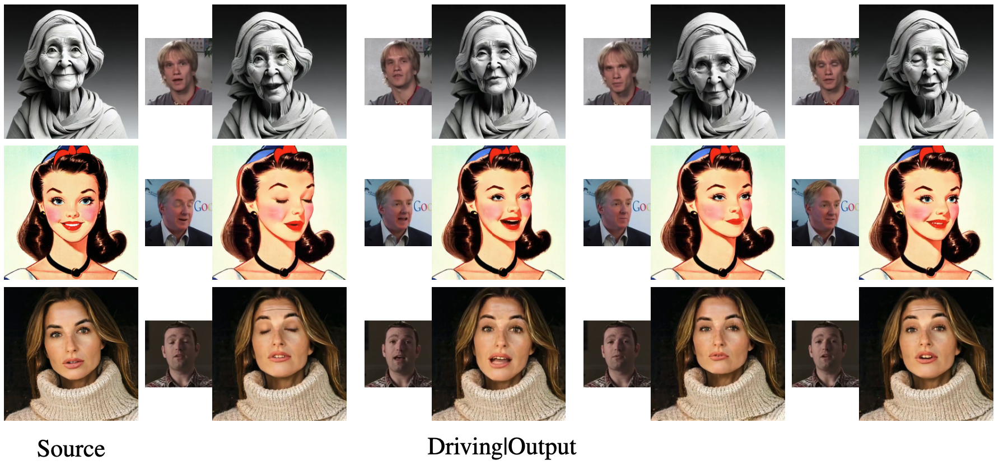

Mallikarjun B R1, Fei Yin1,2, Vikram Voleti1, Nikita Drobyshev1,3, Maksim Lapin1, Aaryaman Vasishta1, Varun Jampani1
1Stability AI 2University of Cambridge 3 3Cantina
Download Paper (PDF)
Portrait animation aims to generate photo-realistic videos from a single source image by reenacting the expression and pose from a driving video. While early methods relied on 3D morphable models or feature warping techniques, they often suffered from limited expressivity, temporal inconsistency, and poor generalization to unseen identities or large pose variations. Recent advances using diffusion models have demonstrated improved quality but remain constrained by weak control signals and architectural limitations. In this work, we propose a novel diffusion-based framework that leverages masked facial regions—specifically the eyes, nose, and mouth—from the driving video as strong motion control cues. To enable robust training without appearance leakage, we adopt cross-identity supervision. To leverage the strong prior from the pre-trained diffusion model, our novel architecture introduces minimal new parameters that converge faster and help in better generalization. We introduce spatial-temporal attention mechanisms that allow inter-frame and intra-frame interactions, effectively capturing subtle motions and reducing temporal artifacts. Our model uses history frames to ensure continuity across segments. At inference, we propose a novel signal fusion strategy that balances motion fidelity with identity preservation. Our approach achieves superior temporal consistency and accurate expression control, enabling high-quality, controllable portrait animation suitable for real-world applications.
Self-Reenactment
Cross-Reenactment: On real humans
Cross-Reenactment: On different styles
@article{svdp,
title={Stable Video-Driven Portraits},
author={B. R., Mallikarjun and Yin, Fei and Voleti, Vikram and Drobyshev, Nikita and Lapin, Maksim and Vasishta, Aaryaman and Jampani, Varun},
title={Stable Video-Driven Portraits},
author={Mallikarjun B. R. and Fei Yin and Vikram Voleti and Nikita Drobyshev and Maksim Lapin and Aaryaman Vasishta and Varun Jampani},
year={2025},
eprint={2509.17476},
archivePrefix={arXiv},
primaryClass={cs.CV},
url={https://arxiv.org/abs/2509.17476},
}